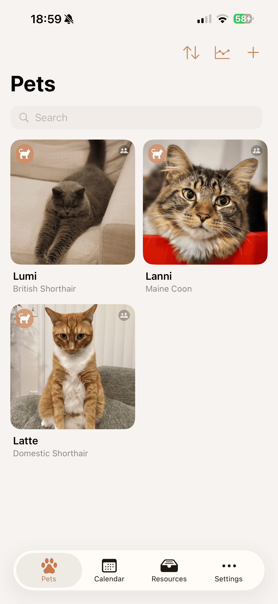
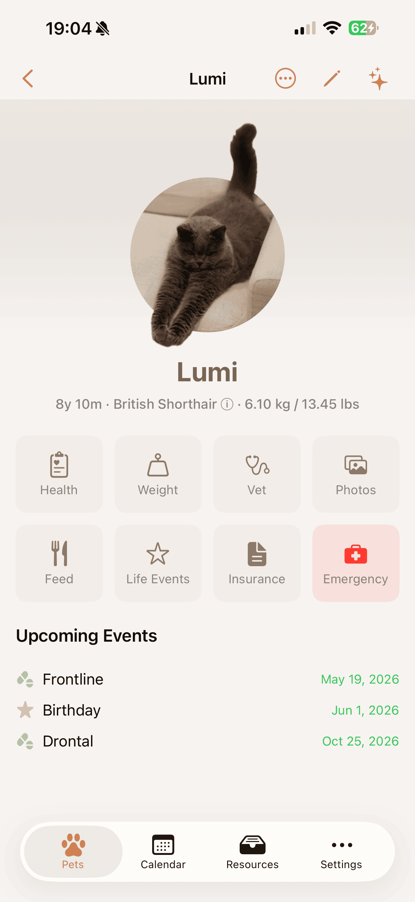
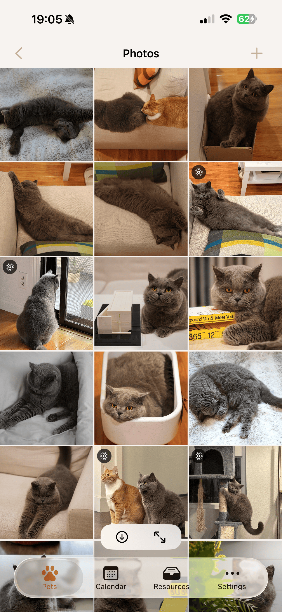
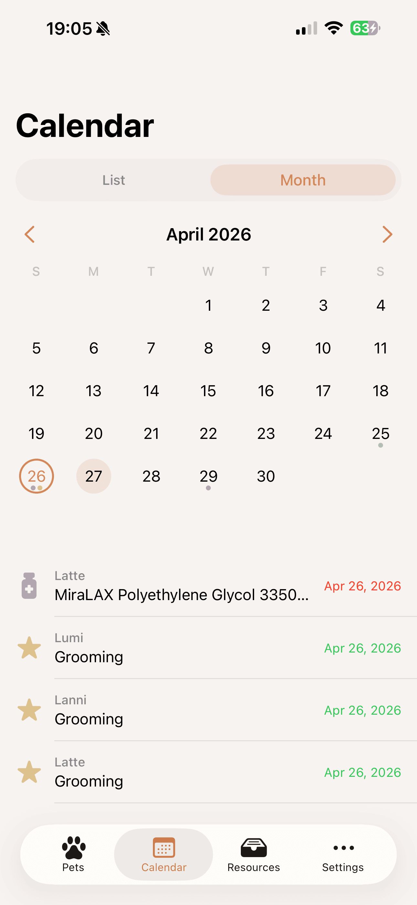
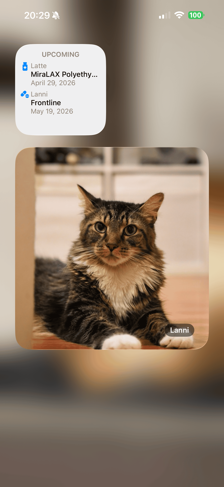

📱Vista previa de la app
Petfolio en iPhone — lista de mascotas, perfil, galería de fotos, calendario y un widget de inicio.





8
Especies
477
Razas
3
Idiomas
🐾Lo que hace Petfolio
🐾
Un perfil para cada mascota
- 8 especies: perros, gatos, conejos, aves, pequeños mamíferos, peces, reptiles. Peces, reptiles y "otros" usan raza de texto libre.
- 477 razas en 5 especies, con grupos AKC / TICA / ARBA y clases de tamaño por especie. Las entradas genéricas «mestizo» / «doméstico» cubren a las mascotas sin pedigrí conocido.
- Panel de perfil: foto principal, edad, peso y cuadrícula de ocho accesos directos — Salud, Peso, Veterinario, Fotos, Alimentación, Eventos, Seguro y Emergencia. Gastos vive como vista propia en Recursos y agrega el gasto de todas las mascotas.
- Fotos ilimitadas por mascota, con EXIF preservada.
💚
Salud registrada con cuidado
- Peso — gráfico de líneas con tendencia de aumento / pérdida / estable y comparación entre varias mascotas.
- Vacunas y prevención de parásitos (interna / externa / combinada) — insignias de vencida, hoy y próxima.
- Medicamentos — separación plan / registro que sobrevive a los cambios de receta; pauta por intervalo o según sea necesario; registro rápido desde la lista.
- Síntomas y baños — anotaciones libres que se incorporan a la línea de tiempo.
- Diario de cuidados — línea de tiempo unificada en orden cronológico inverso con filtros. Borrado por deslizamiento con opción de deshacer.
📅
Calendario y recordatorios
- Vista de lista (vencidas / hoy / próximas) y vista mensual.
- Notificaciones programadas hasta con 7 días de antelación, con contador de vencidas y de hoy en el ícono.
- Agrupa vacunas, prevención de parásitos, medicación, seguimientos veterinarios, días importantes y renovaciones de seguro.
🥣
Pestaña Recursos — todos los catálogos del hogar en un sitio
- Resumen entre mascotas de Gastos, Comida, Nutrición, Medicación activa, Arena, Sustrato y Contactos veterinarios.
- Las entradas pueden vincularse a una mascota o vivir a nivel de hogar — los elementos del hogar viajan a través de Compartir en Familia.
- Comida, nutrición y arena con fotos del producto, valoraciones, precios y pantallas de detalle.
- Las primas de seguro se desglosan por ciclo mensual de facturación y cada ciclo se asigna al año que contiene la mayoría de sus días, sumándose a Gastos.
🏥
Visitas al veterinario y seguro
- Visitas con archivos adjuntos en PDF e imagen — vista previa con QuickLook; adjuntar desde Archivos o Fotos.
- Directorio de contactos con valores copiables y toque para llamar, enviar correo o abrir en Mapas.
- Pólizas por mascota con fechas de renovación que aparecen en el calendario y los recordatorios.
📷
Fotos y Live Photos
- Varias fotos por mascota con soporte completo de Live Photos — pares JPG + MOV, reproducción en la app y conservación al exportar e importar.
- Avatar con sujeto recortado — la silueta de tu mascota se superpone al círculo y se anima con la Live Photo al mantener pulsado.
✨
Asistentes inteligentes
- Extracción de texto con Gemini AI — fotografía un informe veterinario, etiqueta de vacuna, producto antiparasitario o frasco de medicamento; confirma los datos antes de guardarlos. Cubre los siete tipos de eventos. Trae tu propia clave API gratuita, guardada en el Llavero de iOS.
- Widgets de inicio — "Próximos eventos" y una "Foto de mascota" rotatoria.
- Búsqueda Spotlight — encuentra cualquier mascota por nombre o raza.
💾
Tus datos, tu dispositivo
- Todo se queda en tu dispositivo o en iCloud — no operamos servidores y nunca vemos tus registros.
- Copia ZIP completa (foto de perfil y fotos por elemento) con fusión o reemplazo al restaurar. Con protección Zip Slip y validación antes de borrar.
👨👩👧👦
Comparte tu hogar
Compartir en Familia permite que todas las personas que cuidan a tus mascotas vean los mismos registros, recordatorios y fotos. Invita a tu pareja, compañero de piso o cuidador con un toque — y mantén a toda la casa sincronizada a través de iCloud.
⬇️Obtén la app
Petfolio Patitas
Cada mascota, cada huella — todo en un lugar cálido.
iPhone, iPad · iOS 18.0+ · Mac · macOS 15.0+
💌Soporte
¿Preguntas, errores o sugerencias? Nos encantará leerte.